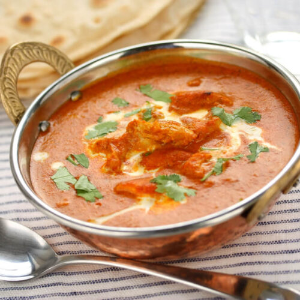

|
Prep Time 20 mins
Cook Time 35 mins
Total Time 55 mins
- Course: Main Course
- Cuisine: Indian
- Servings: 4 people
- Author: Amelia
Ingredients
- 400 grams Boneless chicken cut into 1½ inch pieces
- 1 tablespoon Lemon juice
- 1 teaspoon Kashmiri red chili powder
- Salt to taste
- 2 tablespoons Butter
For marinade
- 1/2 cup Yogurt
- 2 teaspoons Ginger paste
- 2 teaspoons Garlic paste
- 1/2 teaspoon Kashmiri red chili powder
- 1/2 teaspoon Garam masala powder
- Salt to taste
- 2 teaspoons Mustard oil
|
|

|